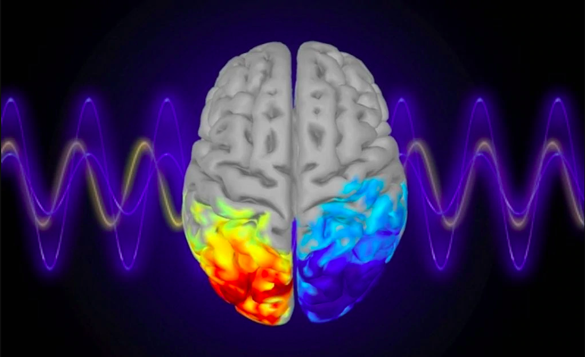

Information
Also beneficial is to pair the brainwaves with sounds and music tuned to 432 Hz. Brainwave entrainment is a method to stimulate the brain’s electrical response to rhythmic sensory stimulation, such as pulsating light or sound. Monaural and binaural beats can be used, such as singing bowls or other anolog methods, in addition to electronic music production. Different modulations correspond to different brainwave states and frequencies. It depends on the specific person, their intention, and journey.
Audio-visual Entrainment is a technique in which lights flash into the eyes while tones are pulsed into the ears in the range from 1 to 40 Hz. It stimulates neurotransmitters, increases cerebral blood flow, produces deep autonomic calming, hypnotic induction and meditative effects and excites and reestablishes neural networks. It improves mental health, as well as academic and athletic performance.